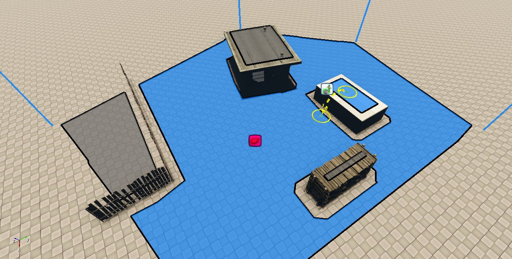
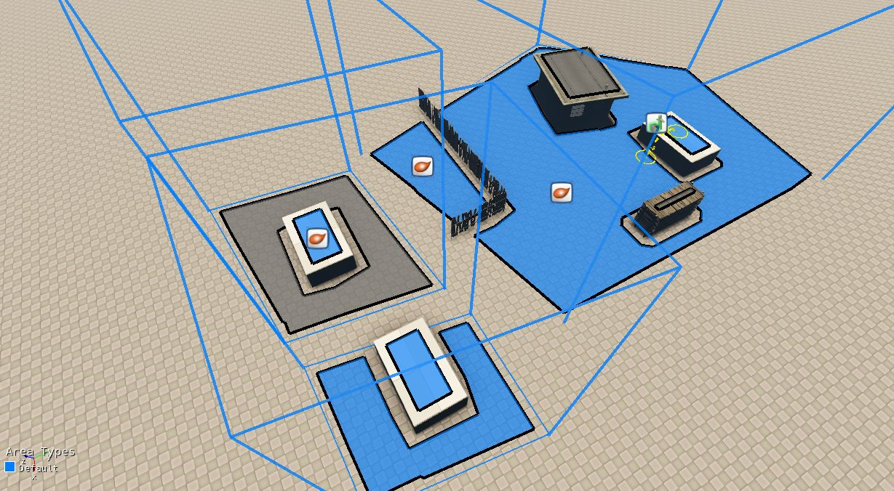
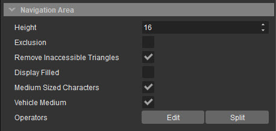
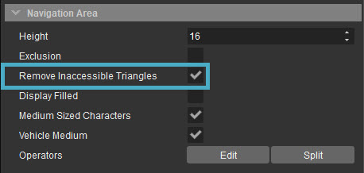
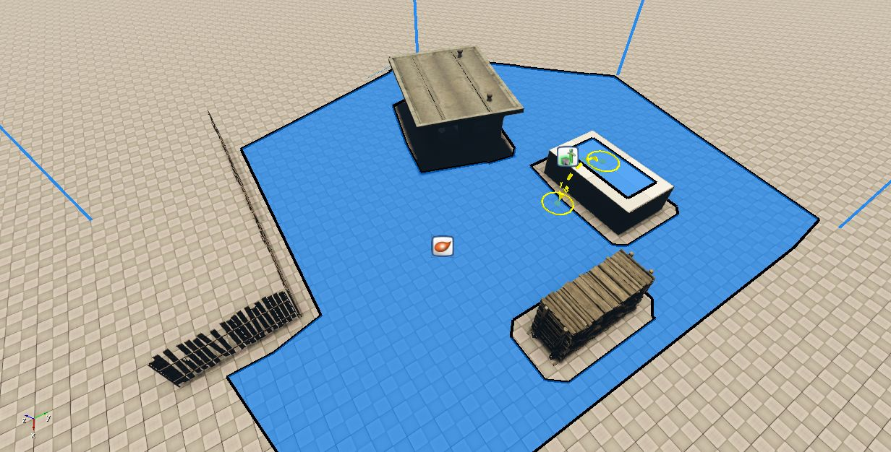

Обзор
Создание NavMesh вокруг нескольких объектов часто приводит к созданию областей, которые могут быть недоступны для персонажей AI во время поиска пути, например, крыши, внутренние части построек и т. д.
Эти недоступные области можно отфильтровать с помощью исходных точек, так что треугольники сетки, не соединенные с исходной точкой, помечаются как недоступные.
Эта доступность вычисляется путем выполнения алгоритма заливки в NavMesh; острова с треугольниками, которые соединены с исходной точкой напрямую или внешними связями, доступны и, следовательно, окрашены в синий цвет, а остальные выделены серым цветом.

Области, недоступные из точки посева (в центре), выделены серым цветом.
Остров — это любая изолированная область внутри созданного NavMesh, содержащая размещенный реквизит или объект. На изображениях на этой странице каждая из размещенных структур сама по себе является островом.
Функциональность
Начальные точки
- Чтобы вычислить доступность островов в пределах NavMesh, необходимо разместить хотя бы одну начальную точку внутри объема области навигации NavMesh. Начальные точки находятся под AI → Исходная точка навигации в рамках Создать объект инструмент.
- Алгоритм заливки начинается с треугольника, который находится на расстоянии одной единицы от размещенной исходной точки на триангулированном NavMesh; треугольник окрашен в синий цвет, если доступен из исходной точки, в противном случае он отображается серым цветом.
Если положение исходной точки изменено, доступность треугольников пересчитывается и обновляется соответствующим образом. Аналогично, если у NavMesh нет исходных точек, он не будет содержать недоступных (серых) областей, как показано ниже.

Navmesh (внизу справа) без исходной точки
В NavMesh может быть включено любое количество исходных точек, что позволяет вычислить доступность нескольких важных областей.
Более того, символы AI, включенные в GameSDK (Legacy Entities → AI → Персонажи → Человек) также считаются исходными точками, если они помещены в NavMesh, при условии, что Тип агента у NavMesh такой же, как у персонажа.
Чтобы установить тип агента NavMesh,
- Выберите NavMesh в окне просмотра/Level Explorer; это приведет к тому, что его свойства отобразятся в Инструменте свойств.
- Флажки для доступных типов агентов должны быть перечислены в Область навигации панель инструмента «Свойства», под Дисплей заполнен вариант, как показано на изображении ниже. Установите соответствующие флажки, чтобы установить тип агента NavMesh.
Типы агентов сначала должны быть определены и настроены в тот Navigation.xml файл, расположенный под ProjectFolder/Скрипты/AI/. Пожалуйста, обратитесь к типам агентов Navmesh. документация для получения дополнительной информации.

Область навигации
Положение островов и их доступность рассчитываются только после полного завершения генерации NavMesh. Более того, время, необходимое для обновления NavMesh, зависит от размера самой сетки.
Следовательно, при внесении каких-либо изменений в NavMesh в игровом режиме пользователи должны знать, что его информация о доступности может находиться в противоречивом состоянии до тех пор, пока NavMesh не будет полностью обновлена.
Удаление недоступных треугольников
Если недоступные треугольники NavMesh не используются в игре, их лучше выбросить, чтобы повысить производительность; чем меньше треугольников имеет NavMesh, тем эффективнее становятся вычислительные запросы внутри NavMesh.
Включение Удалить недоступные треугольники Свойство области навигации удаляет недоступные треугольники, когда уровень загружается в Программа запуска игр; этот объект недвижимости находится под Область навигации вкладка панели «Свойства», когда существующая область навигации выбрана через Level Explorer или видовой экран.

Удалить недоступные треугольники
- Удалить недоступные треугольники включен по умолчанию.
- Области навигации отображаются темно-синим цветом, когда Удалить недоступные треугольники свойство включено.
- Если значение ai_MNMRemoveInaccessibleTrianglesOnLoad CVar установлен на 0 (по умолчанию=1), недоступные треугольники областей навигации не будут удалены, даже если Удалить недоступные треугольники свойство включено.

NavMesh из первое изображение с удаленными недоступными треугольниками
Стоимость ai_MNMRemoveInaccessibleTrianglesOnLoad игнорируется при загрузке NavMesh в редакторе Sandbox и учитывается только в Game Launcher. Более того, удаленные треугольники могут появиться снова при обновлении NavMesh, хотя они все равно будут помечены как недоступные (серые).